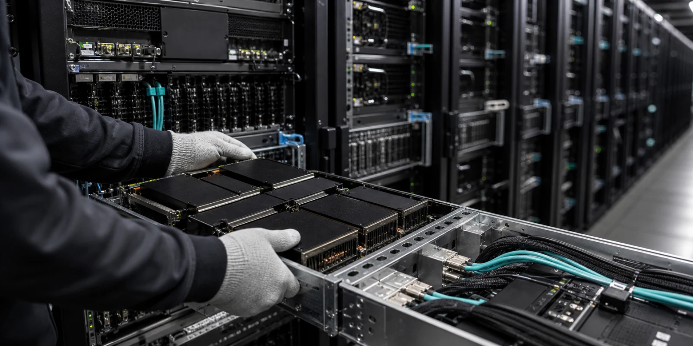

엔비디아은 AI GPU 대표 성장주로 분류되지만, 지금 시장이 묻는 질문은 이름값 하나로 끝나지 않습니다. 엔비디아 주식은 Blackwell과 Rubin 수요, hyperscaler 설비투자, 수출통제, 고객 집중도가 함께 움직이는 고기대 종목입니다. 거래대금이 몰릴 때는 가격 반응보다 어떤 정보가 새로 들어왔고 어떤 기대가 이미 반영되어 있었는지를 먼저 나누어야 합니다.
이 주제는 추천보다 검증 기준이 중요하므로 엔비디아을 읽는 순서를 정리합니다. 이 글은 수익률을 약속하지 않으며, 회사와 네트워크가 실제로 증명해야 할 숫자와 남아 있는 부담을 독자가 직접 점검할 수 있도록 돕는 정보형 분석입니다.
수요보다 예산이 먼저다

핵심은 AI 모델 수요보다 클라우드 고객의 capex 지속성이 매출의 바닥을 만드는 구조입니다. 엔비디아에 대한 시장의 기대는 이 장면이 단순한 뉴스가 아니라 반복 가능한 매출, 사용량, 비용 절감, 혹은 신뢰 회복으로 이어질 때 더 오래 유지됩니다. 같은 headline이라도 일회성 이벤트인지 구조 변화인지에 따라 주가와 코인 가격의 의미가 달라집니다.
확인은 hyperscaler capex, 데이터센터 투자, 고객 발주, AI 서비스 수익화입니다. 이 지표들은 한 줄로 끝나는 숫자가 아니라 서로 맞물려 움직입니다. 예를 들어 거래대금이 늘어도 수익성, 현금흐름, 고객 승인, 온체인 사용, 규제 조건 중 어느 하나가 따라오지 않으면 기대는 오래 버티기 어렵습니다.
부담은 사용량은 늘어도 수익화가 늦으면 고객이 주문 속도를 조절할 수 있다는 점입니다. 그래서 엔비디아을 다룰 때는 긍정적 발표와 부담 요인을 같은 문단 안에 두어야 합니다. 독자가 필요한 것은 방향을 단정하는 문장이 아니라 다음 실적, 공시, 온체인 데이터, 상품 흐름에서 무엇을 확인해야 하는지입니다.
제품 전환의 좁은 다리
핵심은 Blackwell과 Rubin 세대 전환이 칩이 아니라 시스템 전체 전환으로 진행되는 상황입니다. 엔비디아에 대한 시장의 기대는 이 장면이 단순한 뉴스가 아니라 반복 가능한 매출, 사용량, 비용 절감, 혹은 신뢰 회복으로 이어질 때 더 오래 유지됩니다. 같은 headline이라도 일회성 이벤트인지 구조 변화인지에 따라 주가와 코인 가격의 의미가 달라집니다.
확인은 HBM 공급, 패키징, 네트워킹, 서버 전력·냉각입니다. 이 지표들은 한 줄로 끝나는 숫자가 아니라 서로 맞물려 움직입니다. 예를 들어 거래대금이 늘어도 수익성, 현금흐름, 고객 승인, 온체인 사용, 규제 조건 중 어느 하나가 따라오지 않으면 기대는 오래 버티기 어렵습니다.
부담은 공급망의 작은 병목도 납품 일정과 매출 인식에 영향을 줄 수 있다는 점입니다. 그래서 엔비디아을 다룰 때는 긍정적 발표와 부담 요인을 같은 문단 안에 두어야 합니다. 독자가 필요한 것은 방향을 단정하는 문장이 아니라 다음 실적, 공시, 온체인 데이터, 상품 흐름에서 무엇을 확인해야 하는지입니다.
수출통제의 비용
핵심은 AI 반도체가 정책 경쟁의 중심에 있어 지역별 제품 판매와 재고 조정이 민감한 구간입니다. 엔비디아에 대한 시장의 기대는 이 장면이 단순한 뉴스가 아니라 반복 가능한 매출, 사용량, 비용 절감, 혹은 신뢰 회복으로 이어질 때 더 오래 유지됩니다. 같은 headline이라도 일회성 이벤트인지 구조 변화인지에 따라 주가와 코인 가격의 의미가 달라집니다.
확인은 제한 제품 매출, 대체 제품 설계, 재고, 규제 준수 비용입니다. 이 지표들은 한 줄로 끝나는 숫자가 아니라 서로 맞물려 움직입니다. 예를 들어 거래대금이 늘어도 수익성, 현금흐름, 고객 승인, 온체인 사용, 규제 조건 중 어느 하나가 따라오지 않으면 기대는 오래 버티기 어렵습니다.
부담은 다른 지역 수요가 빈자리를 채우더라도 마진과 제품 믹스가 바뀔 수 있다는 점입니다. 그래서 엔비디아을 다룰 때는 긍정적 발표와 부담 요인을 같은 문단 안에 두어야 합니다. 독자가 필요한 것은 방향을 단정하는 문장이 아니라 다음 실적, 공시, 온체인 데이터, 상품 흐름에서 무엇을 확인해야 하는지입니다.
독점력은 어디서 약해지나
핵심은 CUDA와 네트워킹, 개발자 생태계가 높은 전환비용을 만드는지입니다. 엔비디아에 대한 시장의 기대는 이 장면이 단순한 뉴스가 아니라 반복 가능한 매출, 사용량, 비용 절감, 혹은 신뢰 회복으로 이어질 때 더 오래 유지됩니다. 같은 headline이라도 일회성 이벤트인지 구조 변화인지에 따라 주가와 코인 가격의 의미가 달라집니다.
확인은 소프트웨어 채택, 네트워킹 매출, 고객 락인, 대체 가속기 사용입니다. 이 지표들은 한 줄로 끝나는 숫자가 아니라 서로 맞물려 움직입니다. 예를 들어 거래대금이 늘어도 수익성, 현금흐름, 고객 승인, 온체인 사용, 규제 조건 중 어느 하나가 따라오지 않으면 기대는 오래 버티기 어렵습니다.
부담은 자체 AI 칩과 ASIC이 일부 워크로드를 가져갈 수 있다는 점입니다. 그래서 엔비디아을 다룰 때는 긍정적 발표와 부담 요인을 같은 문단 안에 두어야 합니다. 독자가 필요한 것은 방향을 단정하는 문장이 아니라 다음 실적, 공시, 온체인 데이터, 상품 흐름에서 무엇을 확인해야 하는지입니다.
비싼 기대의 관리
핵심은 강한 실적과 높은 밸류에이션이 동시에 존재해 작은 실망도 크게 반응하는 구간입니다. 엔비디아에 대한 시장의 기대는 이 장면이 단순한 뉴스가 아니라 반복 가능한 매출, 사용량, 비용 절감, 혹은 신뢰 회복으로 이어질 때 더 오래 유지됩니다. 같은 headline이라도 일회성 이벤트인지 구조 변화인지에 따라 주가와 코인 가격의 의미가 달라집니다.
확인은 매출 가이던스, 총마진, 고객 집중도, 재고입니다. 이 지표들은 한 줄로 끝나는 숫자가 아니라 서로 맞물려 움직입니다. 예를 들어 거래대금이 늘어도 수익성, 현금흐름, 고객 승인, 온체인 사용, 규제 조건 중 어느 하나가 따라오지 않으면 기대는 오래 버티기 어렵습니다.
부담은 좋은 회사와 좋은 가격이 항상 같은 뜻은 아니라는 점입니다. 그래서 엔비디아을 다룰 때는 긍정적 발표와 부담 요인을 같은 문단 안에 두어야 합니다. 독자가 필요한 것은 방향을 단정하는 문장이 아니라 다음 실적, 공시, 온체인 데이터, 상품 흐름에서 무엇을 확인해야 하는지입니다.
다음 확인 순서
이 흐름은 엔비디아을 다시 볼 때는 거래대금이 왜 몰렸는지, 그 이유가 공식 자료와 실제 숫자로 확인되는지, 그리고 이미 가격에 반영된 기대보다 새로 확인된 증거가 더 큰지 차례로 보아야 합니다. 이 순서가 있어야 단기 화제와 지속 가능한 이슈를 구분할 수 있습니다.
특히 미국주식 분야의 글은 특정 이름을 반복해 소비하는 방식보다, 아직 충분히 다루지 않았지만 거래대금과 뉴스가 함께 커지는 대상을 계속 발굴해야 합니다. 다만 사용자가 특정 종목이나 코인을 지정한 경우에는 그 대상을 중심에 두고, 투자 조언이 아니라 판단 기준과 확인 지표를 제공해야 합니다.
엔비디아의 다음 움직임은 단일 뉴스보다 여러 확인 신호가 겹칠 때 더 설득력 있게 읽힙니다. 좋은 소식이 나와도 비용과 규제, 경쟁, 유동성의 질을 함께 확인해야 하며, 나쁜 소식이 나와도 불확실성이 해소되는 성격인지 따로 보아야 합니다.